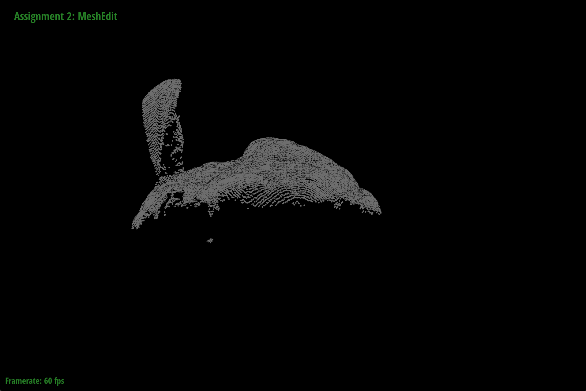
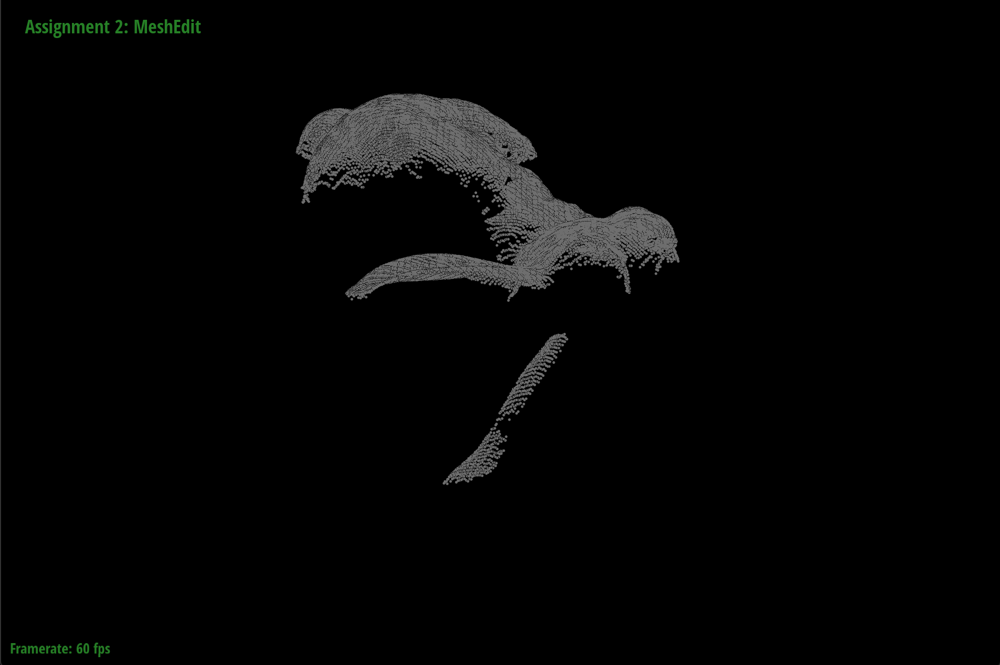
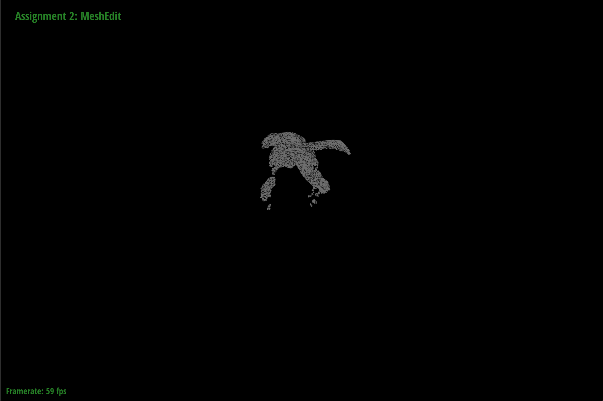
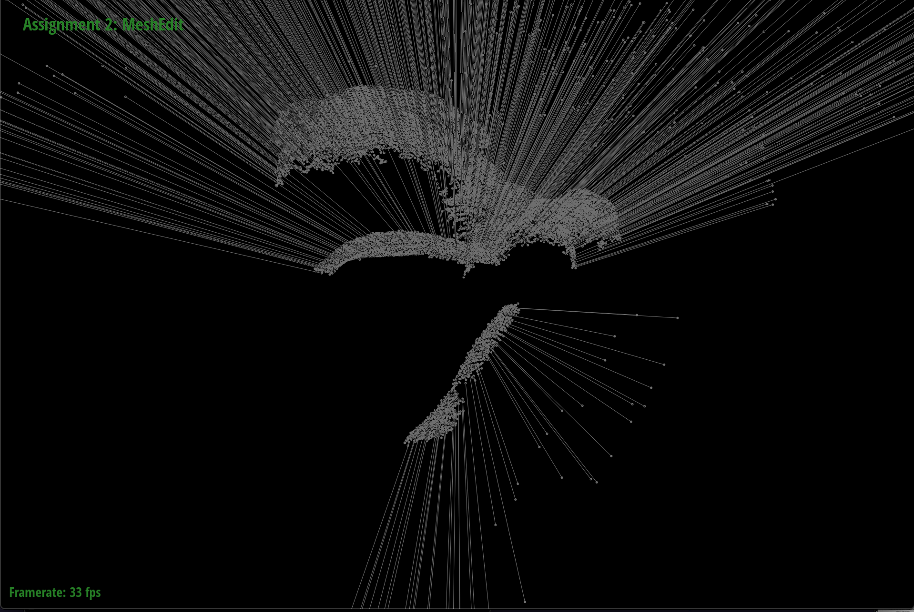
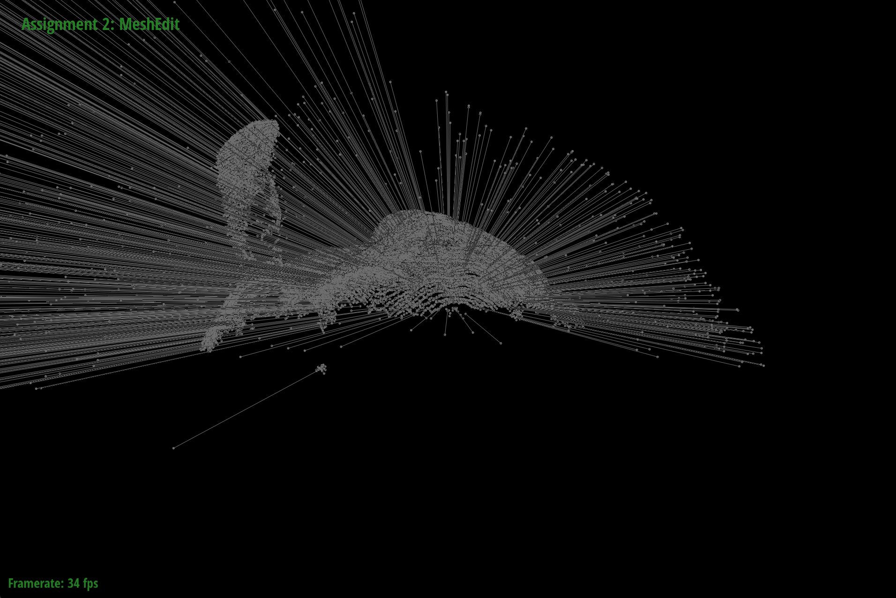
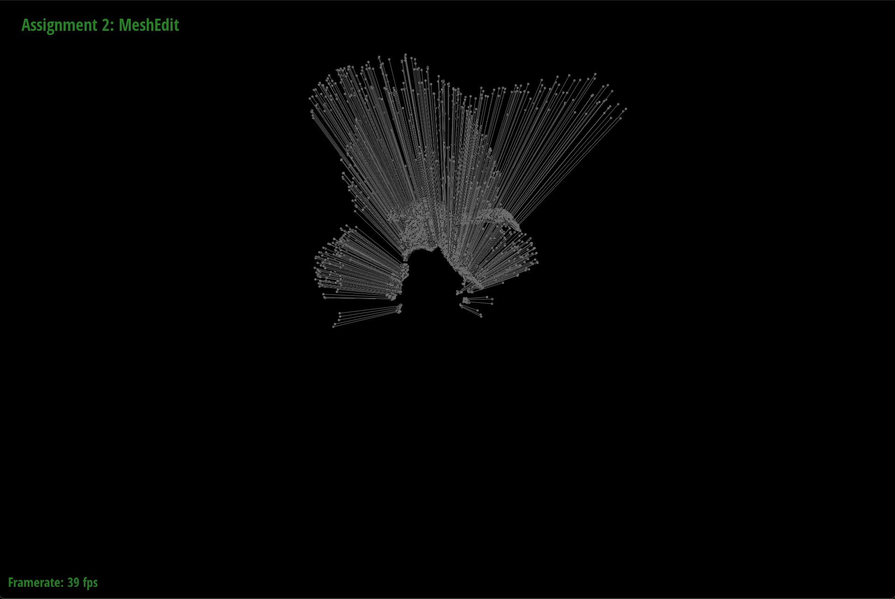

|  |
In this project, we parsed .ply files in order to get 3D vertices or our point cloud. Using these vertices, we calculated the normals. To calculate the vertex normals, we took advantage of the already calculated spatial mapping that will be used for the ball pivot algorithm. With spatial mapping, we were able to calculate the centroid of every vertex closeby and calculated a vector from the centroid to the vertex in question. The “normal” was then simply the direction of that vector, and we updated the normal attribute in each vertex. Then, with the point cloud and normals we implemented the ball-pivoting algorithm in order to create a 3D mesh.
To parse .ply files, our group decided to utilize the rply library. Using this library, parsing each line in the .ply file for vertex positions became rather straightforward, and we were able to successfully extract a list of Vector3D vertices from passed in ply files. To render .ply files, we took advantage of the already existing rendering code inside meshEdit.cpp from project 2. Our group decided to not utilize the halfedge data structure though, and as a result, a majority of the code in meshEdit was unused. However, we were able to follow some of the rendering patterns from the file, and were able to successfully render points and edges from our algorithm results. Unfortunately, our group was unable to figure out the opengl shader program, and as such our renderings only came out in a single color.
We followed the algorithm detailed in the research paper: The Ball-Pivoting Algorithm for Surface Reconstruction. The pseudocode given for this algorithm required us to write separate helper functions such as find_seed_triangle, ball_pivot, join, and glue.
The above picture shows an example of how the ball-pivot algorithm works. With a seed triangle where a 3D ball is resting on all three points, the ball pivots over an edge eij until it touches another point vertex k. The new triangle ijk is stored to be rendered after the algorithm is complete, and from that new position, the center of the sphere is calculated and the ball continues to pivot over the new edges ik and kj.
Point: Our point class stores a point position and its normal.
PivotTriangle: This struct was added into our BallPivot class in order to store the 3 points associated with a triangle. It also stores information about an edge from the point sigma_i to sigma_j. This way, we can calculate the position of the ball as it pivots around a certain pivot edge.
Front: A front is essentially a list of active edge loops that will be used to keep track of growing faces on the resulting mesh. In our code, this is represented as a vector of vectors of PivotEdges, where edges are popped or pushed back based on the removal and addition of edges in the ball pivot algorithm.
Given a list of points, we created a spatial map for these points in order to speed up the process of finding the seed triangle. Each 3D box had a height, width, and depth of 2 * (radius of the sphere). The hash position and create spatial grid functions were similar to our project 4 clothsim's spatial mapping functions.
The first step in the ball-pivoting algorithm is to identify a "seed" from which to begin the pivoting action. Naturally, to begin the search for candidates we iterate over points using the spatial map described in the previous section. We also take an advantage of an optimization mentioned in our reference paper, where we only consider one candiate seed triangle per spatial partition. This scheme allows us to avoid constructing artifacts from noise and only "catch" components that span a volume greater than a few partitions. Therefore, to find a seed, we keep track of partitions containing no elements of the constructed mesh, and search over said partitions until no more remain. Additionally, because the algorithm simulates a ball rolling along the surface of the mesh, we search over points in order of descending dot product with the average normal of the partition. This heuristic allows us to more reliably seed the ball "on" the surface, so that we're ready to roll.
Then, after identifying the first candidate point using the scheme above, we iterate over pairs of points in a 2ρ-neighborhood in order of increasing distance, where ρ is the radius of the ball. Then, among these points, we check whether the triplet of points forms a valid triangle (i.e., their normals are aligned and there exists a ball of radius ρ that touches all three points and contains no other point). If so, then a valid seed triangle has been identified and we return it.
In this part, we simulate the ball rolling along the surface to identify new points of the mesh. In particular, we simulate the ball rotating outward from the surface from its initial position, about the axis defined by the pivoting edge (the edge around which we're rolling). During this motion, we want to find the first point that the ball hits (with a valid normal); then this new point along with the pivoting edge form a new triangle with edges from which we can continue pivoting.
Of course, in practice it would be inefficient (and potentially inaccurate) to actually simulate the rolling motion of the ball, so instead we search over all points that could potentially be hit by the rolling ball and analytically solve for the angle of rotation along the ball's trajectory that each candidate point is hit. Then, we simply take the argmin of these angles.
To generate triangles from the ball pivot algorithm, we utilized two helper methods to add and remove edges to a growing list of edge loops. To add edges, we used a helper method called join, which adds two edges eik and ekj connecting an unused vertex vk touched by the ball in the ball pivot algorithm when pivoting on an active edge eij. The resulting triangle is stored in an external list that keeps track of every triangle we will render at the end of the algorithm, and the edge eij is removed from the front and eik and ekj are added to the front to be expanded upon later. If the vertex vk is actually already used, then that means the vertex is either inside the mesh, which means the edge eij should be marked as a boundary edge, or the vertex vk is already in the front and we need to remove potentially repeating active edges in the front. This removal of extra edges is taken care of in the second helper function glue().
The glue function serves to remove any extraneous edges created by the join function above, essentially “gluing” the edges together and removing sub-loops that could be formed in the front. To check for this, glue takes in a newly created edge eij and checks the loops in the front for the existence of any opposing edges eji. According to the paper, there are four possible scenarios if an opposing edge eji exists and four different ways to handle each scenario. In the first scenario, the opposing edge eji and eij are the only two edges in the loop. If this happens, we know that eij has already been checked and thus both edges can be removed from the front and the loop is deleted. In the second scenario, both edges belong to the same loop and are adjacent to each other. If this occurs, we simply remove the sub-loop created by the opposing edges and the loop in the front is therefore shortened. In the third scenario, both edges belong to the same loop, but are not adjacent to each other. In this situation, we remove the loop created by the opposing edges and split the original loop into two. In the fourth scenario, the edges do not belong to the same loop, and we must then connect both loops into one. To do this, we take the beginning of loop1 and connect that to the end of loop2 and vice versa, deleting the sub-loop created by the opposing edges. After running glue, any opposing edges will be removed from the front to prevent any repeating active edges, and the algorithm can proceed as usual.
|

|
|

|
|

|

|

|
Parsing and rendering points; join and glue helper methods
Spatial mapping, rendering edges, helped with find_seed_triangle
Ball_pivot function and find_seed_triangle